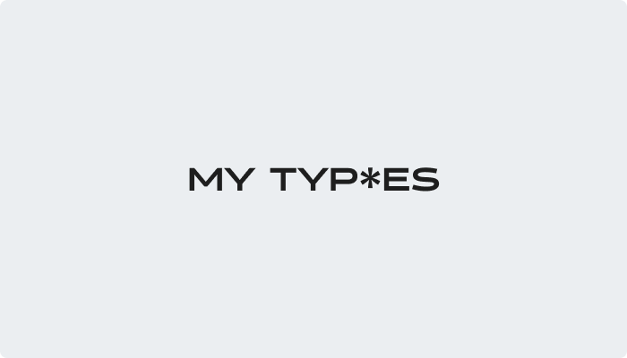
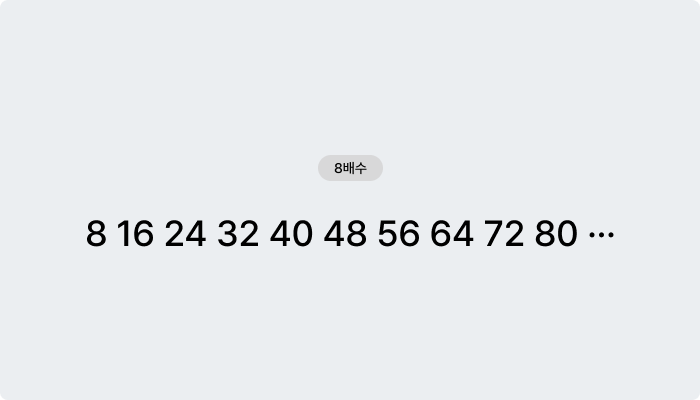
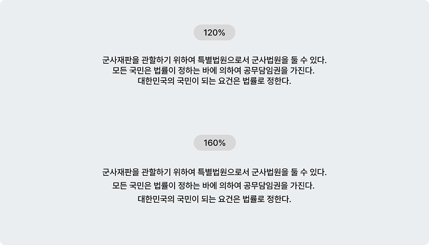
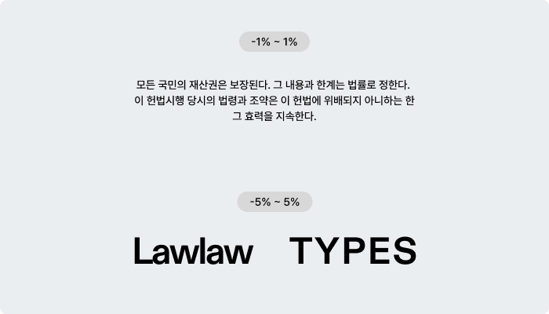

그동안 디자인을 하며 자연스럽게 느끼고 실행해온, 지극히 개인적인 저만의 서체 사용 습관을
정리한 페이지입니다. 저는 효율을 중요하게 생각해, 어떤 작은 일을 할 때에도 저만의 순서나 기준을
만들어두고 그걸 따르는 것을 좋아하는 편인데, 이런 과정이 쌓이면서 어느 순간 제 방식대로 정리된
습관이 생겼다는 것을 최근에 느꼈어요.
서체 관련된 내용을 뭘 넣을까 생각하다가 이걸 정리해보고 싶어서 만들었습니다.
저의 정말 주관적인 생각일 뿐이니 그냥 재밌게 읽어주세요. 이런 섹션들로 이루어져 있어요.
서체 크기 기준 / 본문 텍스트의 행간 / 상황별 자간 선택

첫번째 섹션은 서체 크기 기준입니다. 자간 행간보다 정하기 어려운게 서체 크기인 것 같아요.
상황에 따라서 지키지 않을 때도 있지만, 저는 보통 8의 배수를 사용합니다. 예전에 어떤 디자인
강연을 들었었는데 그 때 기억이 오래 남아서 애매할 땐 무조건 8배수로 설정합니다.
뭔가 이렇다 할 이유는 없지만 8배수로 맞춰서 디자인을 하면 값을 정할 때 고민하지 않아도 되고,
작업을 했을 때 그리드나 여백에 잘 맞는 경우가 많았어서 아직까지 이렇게 사용하고 있어요. 그리고
디자인 툴 대부분이 폰트 사이즈 숏컷을 짝수로 맞춰놓은데엔 이유가 있지 않을까 싶습니다.

두번째 섹션은 본문 텍스트의 행간 기준입니다. 텍스트가 여러 줄일 때 행간 값을 고르기 어려운데,
그래서 저는 행간의 최소값과 최대값을 정해놓고 작업하고 있어요. 산세리프체 기준 최소 값을
120%로 잡아놓고, 화면을 봤을 때 뭔가 좁다 싶으면 140~160%까지 늘려서 사용합니다.
Auto는 서체마다 값이 다르고, px 고정값은 텍스트 크기에 따라 비율이 이상해지는 느낌이여서,
가독성이 중요한 본문 텍스트에서는 항상 %(비율)를 기준으로 설정합니다.

세번째 섹션은 상황별 자간 선택입니다. 자간은 조금만 조절해도 느낌이 크게 바뀐다고 생각해서,
가능하면 기본값을 유지하는 편입니다. 하지만 특정한 목적이 있을 때는 정해둔 범위 안에서 조금씩만
조절하고 있어요.
본문 자간은 -1% ~ 0%만 사용합니다. 대부분의 서체들은 그냥 기본 상태일 때가 가장 가독성이
좋은 것 같아요. 대문자나 큰 텍스트(디스플레이, 타이틀 등)에는 -5% ~ 5%까지 사용합니다.
타이틀에서 강조가 필요할 땐 좁게 설정하는 것도 좋은 느낌이라고 생각해요.